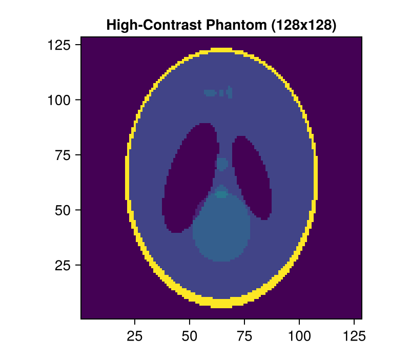
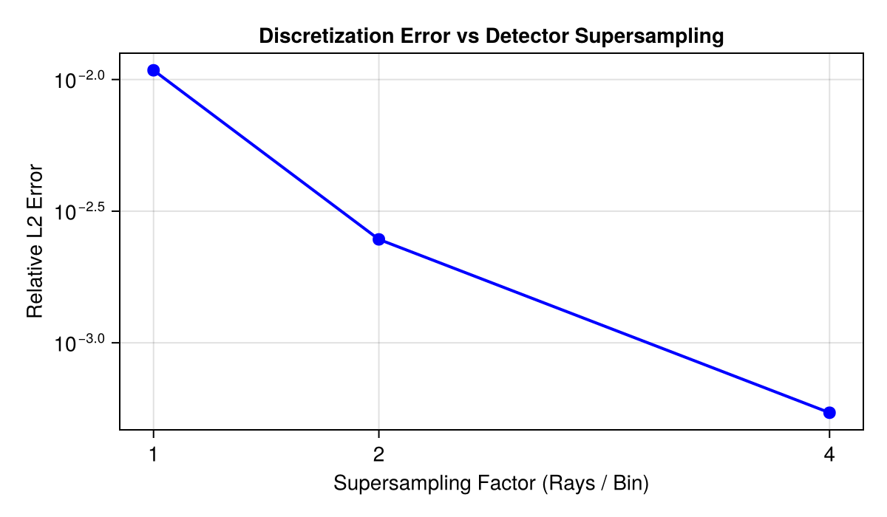
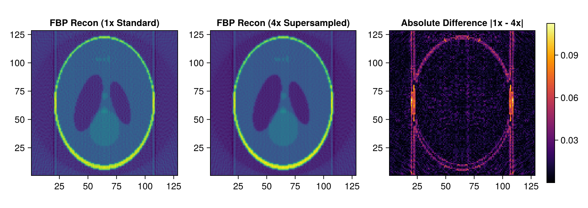

Tutorial 7: Spatial Sampling and Numerical Accuracy
Detector supersampling principles, measuring relative error against high-resolution reference, and anti-aliasing effects.
Prerequisites
This tutorial uses Makie (recommended backend: CairoMakie) for visualization. If CairoMakie is not installed in your environment, add it by running using Pkg; Pkg.add("CairoMakie").
1. Introduction
In CT modeling, continuous physical space is discretized into discrete voxels and detector bins. If forward projection uses only a single infinitesimal line ray per detector bin, high-frequency boundary aliasing (Moiré patterns and jagged edges) occurs.
ASTRA's Detector Supersampling (detector_supersampling) splits each detector bin into multiple sub-rays, integrating attenuation over the bin width.
Topics covered in this notebook:
- Forward projection with sub-ray supersampling (1x, 2x, 4x, 8x).
- Generating an 8x high-resolution reference sinogram $p_{\text{ref}}$.
- Quantifying relative discretization error $\|p - p_{\text{ref}}\| / \|p_{\text{ref}}\|$.
- Visualizing anti-aliasing improvements in FBP reconstructions.
2. Package Loading and Environment Setup
using AstraToolbox
using CairoMakie
using LinearAlgebra
println("Ready for Spatial Sampling exploration!")3. Preparing Test Phantom
Sampling errors are most pronounced near sharp object boundaries with steep step discontinuities. We use a 128×128 Shepp-Logan phantom.
nx, ny = 128, 128
phantom = shepp_logan(nx)
# 90 angles parallel-beam geometry
angles = Float32.(range(0, pi, length = 90))
proj_geom = Parallel2DGeometry(angles, 128, 1.0f0)
fig = Figure(size = (400, 350))
ax = Axis(fig[1, 1], title = "High-Contrast Phantom (128x128)", aspect = DataAspect())
heatmap!(ax, phantom, colormap = :viridis)
fig
4. High-Resolution Reference and Supersampling Comparison
We compute forward projections splitting each detector bin into 1 (standard), 2, 4, and 8 sub-rays using detector_supersampling. (Note: In the ASTRA Toolbox, detector supersampling is accelerated and supported on the CUDA backend.)
The 8x supersampled projection serves as high-precision reference $p_{\text{ref}}$ to measure relative discretization errors: $\text{Relative Error} = \frac{\|p_{k} - p_{\text{ref}}\|_2}{\|p_{\text{ref}}\|_2}$
# Forward projection at various supersampling rates (requires CUDA)
if has_cuda()
sino_1x = project(phantom, proj_geom; detector_supersampling = 1, backend = cuda())
sino_2x = project(phantom, proj_geom; detector_supersampling = 2, backend = cuda())
sino_4x = project(phantom, proj_geom; detector_supersampling = 4, backend = cuda())
sino_8x = project(phantom, proj_geom; detector_supersampling = 8, backend = cuda())
ref_norm = norm(sino_8x)
err_1x = norm(sino_1x - sino_8x) / ref_norm
err_2x = norm(sino_2x - sino_8x) / ref_norm
err_4x = norm(sino_4x - sino_8x) / ref_norm
println("Relative Error (1x standard): ", round(err_1x * 100, digits=4), " %")
println("Relative Error (2x sampled): ", round(err_2x * 100, digits=4), " %")
println("Relative Error (4x sampled): ", round(err_4x * 100, digits=4), " %")
else
println("CUDA is not available. Detector supersampling requires CUDA backend.")
end5. Plotting Relative Error
Observe how relative discretization error decreases monotonically as sub-ray sampling increases.
if has_cuda()
fig = Figure(size = (600, 350))
ax = Axis(fig[1, 1], title = "Discretization Error vs Detector Supersampling",
xlabel = "Supersampling Factor (Rays / Bin)", ylabel = "Relative L2 Error",
yscale = log10)
scatterlines!(ax, [1, 2, 4], [err_1x, err_2x, err_4x], color = :blue, markersize = 12, linewidth = 2)
ax.xticks = [1, 2, 4]
fig
end
6. Visualizing Anti-Aliasing Effect in Reconstructed Images
Reconstruct images from the 1x and 4x sinograms using FBP, and display their absolute difference image to highlight artifact suppression near high-contrast edges.
if has_cuda()
rec_1x = reconstruct(sino_1x, proj_geom, FBPMethod(); volume_size = (nx, ny), backend = cuda())
rec_4x = reconstruct(sino_4x, proj_geom, FBPMethod(); volume_size = (nx, ny), backend = cuda())
diff_img = abs.(rec_1x .- rec_4x)
fig = Figure(size = (900, 320))
ax1 = Axis(fig[1, 1], title = "FBP Recon (1x Standard)", aspect = DataAspect())
heatmap!(ax1, rec_1x, colormap = :viridis)
ax2 = Axis(fig[1, 2], title = "FBP Recon (4x Supersampled)", aspect = DataAspect())
heatmap!(ax2, rec_4x, colormap = :viridis)
ax3 = Axis(fig[1, 3], title = "Absolute Difference |1x - 4x|", aspect = DataAspect())
hm3 = heatmap!(ax3, diff_img, colormap = :inferno)
Colorbar(fig[1, 4], hm3)
fig
end